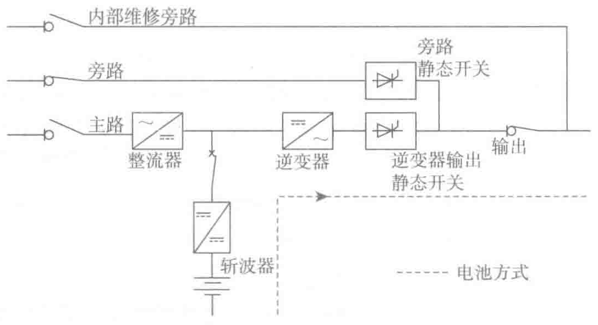
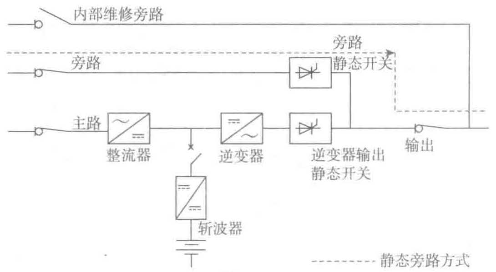

在市电超限（断电、电压、频率不符合要求等）时，整流器自动停止运行，蓄电池投入，并代替主路电源向直流母线供电，然后由逆变器提供给负载所需的、与正常方式允许范围完全相同的功率。这种方式是通过在出现以下情况时输出电压波形不间断切换（电池是并联连接的）来实现：
- 主路交流电源输入故障（市电停电）；
- 主路交流电源输入超出允许范围（市电电能质量太差）。
（3）旁路方式
静态旁路供电，如图3-6所示。

静态开关（SS）确保无间断地将负载切换到旁路交流输入，由旁路电源直接为负载供电。在下列情况时会实现自动切换：
- UPS负荷的过载超过了逆变器的过载能力；
- 整流器、直流母线或逆变器模块内部故障。
发生内部故障时，无论逆变器与旁路是否同步，UPS都会自动切换至旁路电源。需要说明的是，只有当旁路电源电压在允许范围内且逆变器与之同相位时才能进行不间断切换，